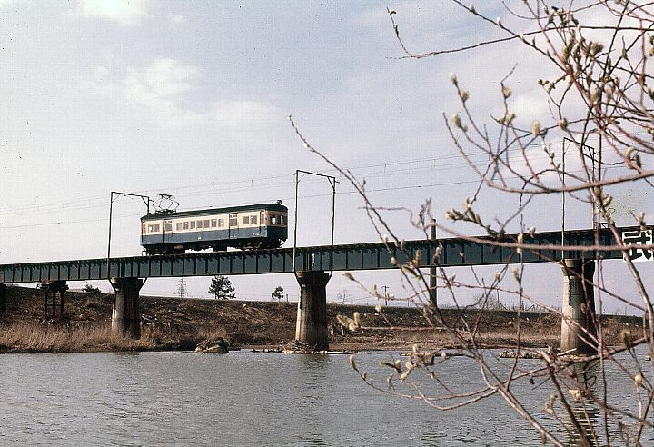
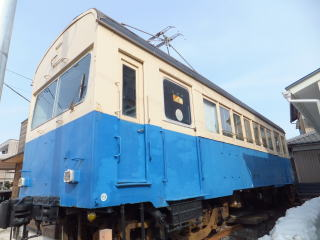
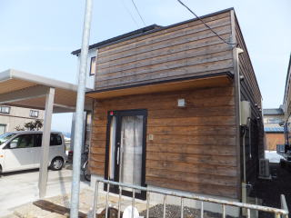

と ： 隣の街まで 南越線 かつて武生を走ってた
一言でいうと？
かつて武生を走っていた電車

福井鉄道南越線は、かつて福井県武生市(現越前市)の社武生駅から岡本新駅(現越前市今立地区)を通って鯖江市戸ノ口駅までを結んでいた福井鉄道の鉄道路線です。
歴史は？
1981年に廃止されました
1915年 武生－岡本新 開業
1924年 戸ノ口まで 開業
1945年 社名変更や会社合併で福井鉄道の一路線に
1971年 粟田部―戸ノ口 廃止
1981年 残りの区間 廃止
まだ電車が残ってる？
村国駅に電車が残っています！


村国駅跡地は今は住宅街になっていますが、個人施設の鉄道博物館があり、福井鉄道福武線で運行されていた160形電車の一両が展示されています。
地元ではちょっとした名物です！
実は村国駅跡地、実家のものすごい近くにあります(笑) 私の母親が当時通学の際に利用していたそうです。母校の国高小学校では、まちなか探検で散策しに行った思い出もありますね。そのころは電車の中にも入れたので、よく秘密基地にして遊んでいました。秋になるとコスモスが近くに咲いて、とっても和やかな景色になります。